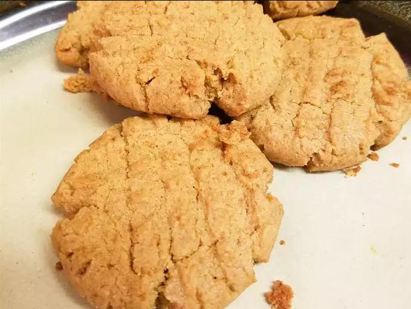

Peanut Butter Cookies

Description
The peanut butter cookie recipe that most resembles modern peanut butter cookies, and introduced the now familiar
cross-hatch pattern, first appeared in Ruth Wakefield's Toll House Tried and True Recipes in 1936. Over the
years, similar recipes followed, including Betty
Crocker's peanut butter cookie recipe.
Our recipe most closely follows Betty Crocker's proportions, but as in Ruth Wakefield's, we are using all butter
instead of a combination of butter and shortening.
Ingredients
- ½ cup shortening
- ½ cup crunchy peanut butter
- ½ cup white sugar
- ½ cup packed brown sugar
- 1 large egg
- 1 ¼ cups all-purpose flour, plus more as needed
- ¾ teaspoon baking soda
- ½ teaspoon baking powder
- ¼ teaspoon salt
Steps
- Cream shortening, peanut butter, and both sugars in a large bowl with an electric mixer until light and
fluffy. Beat in egg until incorporated. Mix flour, baking soda, baking powder, and salt in a separate bowl;
gradually stir into peanut butter mixture until combined. Cover and refrigerate dough for at least 1 hour.
- Preheat the oven to 375 degrees F (190 degrees C).
- Roll chilled dough into walnut-sized balls and place 2 inches apart onto baking sheets. Flatten dough balls
with a fork dipped in flour to form a crosswise pattern.
- Bake in the preheated oven until edges are set, 10 to 12 minutes. Transfer cookies to a wire rack to cool
completely.